宗树人（David A. Palmer）
魏逸飞（Fabian Winiger）
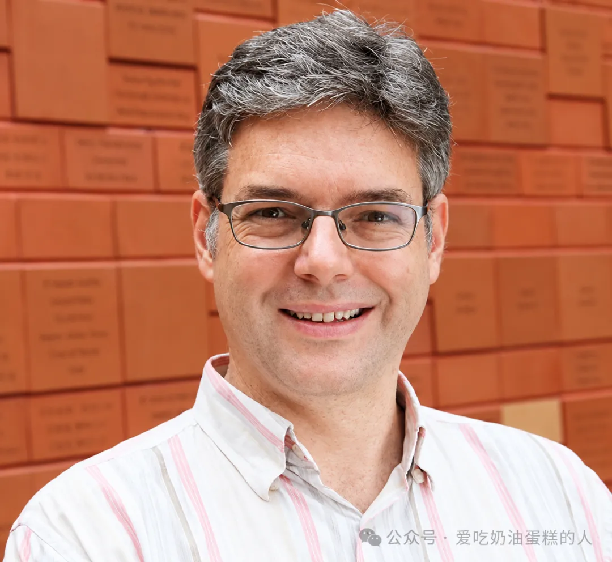
文献来源：David A. Palmer and Fabian Winiger, Neo-socialist governmentality: managing freedom in the People’s Republic of China（《新社会主义治理术：中华人民共和国的自由管理》）, Economy and Society 48, no. 4 (2019): 554–578.
摘要
━━━━★━━━━
本文提出「新社会主义治理术」这一概念，用以描述后革命时代中国一套旨在塑造、培育、约束并引导主体自主性的治理理性。通过比较新自由主义与新社会主义治理术，我们勾勒出一系列「翻译」与「协调」机制：它们既为围绕自我、文化与社会的多元问题化开启空间，也对这些空间加以吸纳和限制。
文章聚焦「建设社会主义精神文明」的制度与话语，并结合我们对多种志愿团体所做的研究，强调新社会主义试图熔合社会主义、市场与中华文明的主体性及权威所具有的离心力量这一目标内在的生产性张力。中国案例表明，对与不同历史轨迹及社会政治制度相关联的不同治理术形态进行理论化具有价值。
引言
━━━━★━━━━
1978年，邓小平启动「改革开放」政策，一个以指令性经济和三十年革命斗争为标志的时代由此告一段落。当时看来，中华人民共和国似乎印证了「历史终结」的预言：共产主义政权仿佛承认市场拥有优先地位，只是用「市场社会主义」和「中国特色社会主义」的名义，遮蔽马克思主义在意识形态上的败退。随着市场改革不断深入，中国境内外许多人都相信，政治改革的到来不过是时间问题。1980年代蓬勃推进的资本主义式改革，似乎迟早会把中国带向某种政治自由主义。消费、生活方式、信仰和价值选择中日益扩大的自由空间，被视为这场转型正在发生的征兆。
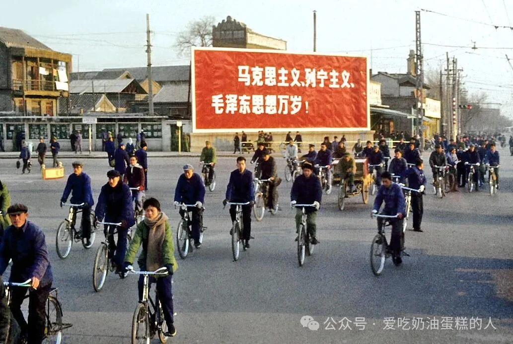
北京，1978年3月。 自行车流从「马克思主义、列宁主义、毛泽东思想万岁」的巨幅标语前经过。改革年代即将展开，革命社会主义留下的政治语言仍占据着城市公共空间。
四十年后，在新的执政时期，这种历史目的论遭遇了挑战。中国共产党重新强调自身的绝对领导地位，意识形态正统性进一步强化，国家在经济所有权和管理中的作用增强，对公共话语的监视和监控加深，社会控制技术不断扩展，对社会团体与文化运动的限制也趋于收紧。2018年改革开放四十周年之际，许多人将这一节点描述为一个时代的终结。与此同时，冷战后的「自由主义国际秩序」也在世界许多地区受到民粹主义、民族主义和威权主义的冲击。
这一新格局提出了几个问题：中国是否突然改变了方向？还是说，此前研究者对于改革时代变化方向的基本判断本来就有偏差？在社会学和人类学中，「后社会主义」（post-socialist）和「晚期社会主义」（late socialist）长期被广泛用来描述改革时期中国的社会政治结构与动力（Hoffman 2006；Ho 2010）。这些术语暗含着一个前提：中国正在离开社会主义。然而，自由空间扩大的同时，社会管理与控制的方法也在扩大覆盖面并变得更加精细，社会与国家之间的界线反而越来越难以截然划开。
本文借助治理术理论，提出另一种理解毛泽东时代以来社会主义转型的方式。问题不宜被简化为威权主义与自由之间的零和消长，更应从自由如何被生产并受到管理这一角度来理解。我们把这种形态称作「新社会主义治理术」（neo-socialist governmentality）。它指向一套不断成形和展开的治理方式：治理者既要扩大自由活动的空间，也要加强对自由的引导和控制。
我们的论点是，过去四十年的主要特征并非社会主义衰退，而是「新社会主义」逐步兴起。政治哲学家长期讨论社会主义中国的革命理想与市场改革之间存在的规范性矛盾（Ci 1994；Lin 2006）。本文则拟勾勒那些被用来处理社会内部这些张力的治理方法的谱系。我们认为，新时期显著可见的意识形态和制度变化，只是数十年来毛时代社会主义治理重新配置后浮出水面的部分。早在1970年代末市场改革启动之初，这一重新配置便在「建设社会主义精神文明」的框架下奠定了基础。
治理术视角有助于理解中国社会主义的转型，我们也借助中国案例，质疑并丰富社会学理论中有关治理术的讨论。一个尤其需要拆开的习惯性等同，是文献中经常出现的「治理术＝新自由主义」。如果治理术指的是以非强制方式生产和管理自由，那么，不同历史、地理和意识形态条件下完全可能生长出不同形态的治理术，并各自具有独特的谱系和轨迹。因此，我们将新自由主义治理术与新社会主义治理术置于对照之中，分析后者如何借用前者，同时又偏离前者。由此，治理术研究或可走向一种比较的、历史的社会学，并把分析范围扩展至非自由主义政体。
下文先界定新社会主义治理术，并将其与新自由主义治理术比较。随后讨论「协调」与「翻译」机制。正是借助这些机制，具有离心倾向的话语和治理理性才被围绕中国共产党的超越性权威整合起来。我们接着考察「社会主义精神文明」话语如何为这种整合提供意识形态框架，同时又为道德和社会问题的多元问题化留下空间，尤其是围绕自我、文化和社会的关切。结尾讨论中国新社会主义中非强制治理与强制治理之间的结构性关系。全文所用实例主要来自我们2008至2018年间对多种文化、宗教和志愿团体所做的民族志研究。
中国的治理术
━━━━★━━━━
米歇尔·福柯把治理术（governmentality）界定为「对行为的引导」。治理术同时包含治理的「理性」与「技术」，其目标是在不诉诸强制的情况下，引导并影响人的行为。这里所谓「理性」（rationality），是「一种特定的推理形式，它规定行动的目的以及实现这一目的的适当手段」（Pyykkönen 2015: 9），其中包括认识、表述、问题化和评价事物的方式。所谓「技术」（technologies），则指「用于引导行为的人员、技法、制度与工具的组合体」。它们创造某些条件，使人能够行使自由意志，同时把自身行为导向权威所期待的方向（Miller and Rose 2008: 16）。
这些「权威」并不等同于国家。它们是由具有权威性的制度和话语构成的组合体，围绕已经被问题化的具体领域生产并运用专家知识。人们借助这些知识接受评价，也据此评价自己，个人与集体的「改善」方案由此被设计出来。这样的治理理性和治理技术遍布医疗卫生、企业管理与创业主义、消费主义、教育、心理学、社会工作、犯罪学、灵性等领域。它们彼此支撑，塑造出能够反思和自我治理的个人。个人通过反思和自我治理维持社会秩序，从而减少国家诉诸规训权力（disciplinary power）或强制权力的需要。
治理术因此既通过国家运行，也在国家之外运行，并常常独立于国家。人的生活和主体性由此在非强制的方式中被塑造。分析的重点也随之离开「国家权力／自由个人」这种二元对立，转向一个更具体的问题：人如何通过自由的培育、结构化和定向而被治理，又如何据此治理自己（Rose 1999）。
这些概念主要来自对西方自由主义社会治理史的分析。中国既非西方社会，也不是自由主义社会，要讨论这里的治理术，就必须同时关注中西两条治理史的轨迹，以及治理理性和技术如何在两者之间流动。欧美治理术的谱系通常从19世纪古典自由主义讲起。当时国家的活动范围受到限制，企业、教会、工会和慈善机构等「公民社会」行动者共同参与社会治理。到了福利自由主义时期，城市规划、卫生、公共健康和教育等领域出现的新型专业知识与制度，逐渐被国家协调和整合。进入「高度自由主义」（advanced liberalism）或「新自由主义」阶段，福利国家的收缩与另一场变化相伴发生：市场理性被用于管理那些过去被认为不属于市场逻辑的领域，同时催生出「一种新的伦理——积极行动、主动选择、承担责任、保持自主的个人有义务成为自由的，并把自己的人生过得仿佛它是选择的结果」（Miller and Rose 2008: 18）。
贯穿这些变迁始终有一个相对稳定的信念：个人拥有内在的权利和自由，由此限制政治与法律调节的正当范围，也推动出越来越多帮助个人照料自身、不受他人治理的方法和策略（Miller and Rose 2008: 204）。那么，在这些自由主义信念从未完整确立于政治法律制度的中国，治理术又是什么样子？现代中国治理史的一个基本特征，是混合型治理术的形成和变迁。中国本土、西方与苏联来源的治理理性和技术，在其中彼此结合。
1911年中华民国建立之后，中国急切投入建设现代民族国家的工程，目标是使自己能够与帝国主义列强并立。内战、军阀割据与日本侵略使新共和国的国家建设时进时退。在这一过程中，大量来自西方的治理理性和技术被引入中国，新生官僚机构、慈善组织、传教团体和宗教社团、大学、学术团体以及基督教青年会等组织都热衷采用这些方法。社会调查、教育计划、城市规划、卫生运动等被用来改造民众习俗，培育「文明的公民」。到1930年代，这些努力在国民党军事政权发动的「新生活运动」中达到高潮。这个运动把法西斯主义、基督教社会福音和儒家修身传统中的思想与技术杂糅在一起（Dirlik 1975）。
1949年中华人民共和国成立后，共产党革命者建立了一套从苏联引入的列宁主义控制体系，力图把生活的各个方面置于中央集权官僚体制的领导之下。但革命精神同时又具有强烈的唯意志主义（voluntarism）色彩。从新政权诞生之日起，中国宪法所称的「民主专政」便面临一个根本难题：政权的建立、维持和表达，都要求通过自愿行动来实现。党需要把愚昧、迷信、受压迫的群众塑造成自由主体。它的理想并非压制，而是培养获得解放的政治主体，使他们在党的领导下自觉投身民族解放与集体复兴事业。
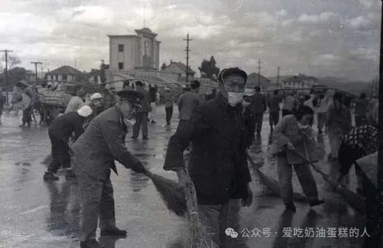
1978年，市场改革启动后，中国开始同世界银行等国际机构及跨国公司接轨。融资、合作和投资项目要求采用新自由主义治理策略，新自由主义话语和实践由此进入中国（Joseph 2012）。这恰好也是新自由主义成为英语世界主导治理模式的时期。劳动力市场的自由化与威权式规训结合在一起，使中国转变为「世界工厂」，并成为全球新自由主义秩序的重要组成部分（H. Wang & Karl 2004）。
在经济改革条件下，中国共产党把技术官僚式列宁主义与革命唯意志主义结合起来，由此与另一类治理方法产生了更强亲和性：这类方法一面提高主体的自主性，一面把主体引向政权为总体人口设定的集体目标。中国缺乏政治自由主义，也缺乏个人隐私权及抵抗国家的权利不可侵犯的观念。这意味着，与自由主义社会相比，中国实施社会工程、通过策略性干预塑造主体性，并培育顺从性个人自主的空间更大（Jeffreys & Sigley 2009: 7）。
新社会主义治理术
━━━━★━━━━
后毛泽东时期政治意识形态的转型，也带来了治理人口方式的根本变化。已有不少研究使用「新自由主义治理术」解释这种变化，涉及的领域包括优生政策与人口控制（Greenhalgh & Winckler 2005；Sigley 1996）、农民工（H. Yan 2003）、教育（Woronov 2009）、职业主义（Hoffman 2006）、社区建设（Bray 2006）以及档案管理（Yang 2011）。
治理术研究由于带有明显的欧美中心倾向而受到批评，但上述中国研究已经证明，这一分析框架具有跨文化解释力（Bray & Jeffreys 2016；Jeffreys & Sigley 2009；Sigley 1996；Dutton & Hindess 2016）。真正棘手的问题在于：所谓「新自由主义」治理术，如何存在于一个明确具有非自由主义性质的社会主义政权内部？ 大卫·哈维（David Harvey，2005）把中国改革称作「具有中国特色的新自由主义」（neoliberalism with Chinese characteristics）。加里·西格利（Gary Sigley）则谈到「一种社会主义—新自由主义混合型，或者也许可以称为『新列宁主义』的政治理性的出现；这种理性在熟悉的政治与技术官僚意义上具有威权性质，却又试图通过某些主体自身的自主性来治理他们」（Sigley 2006: 489）。然而，这些研究所描述的治理策略究竟是否应被准确称作「新自由主义」，一直存在疑问（Nonini 2008；Y. Yan 2010: 208）。正如安德鲁·基普尼斯（Andrew Kipnis）所说，这一概念很容易膨胀成一个「无所不包的修辞」，到头来「遮蔽的比揭示的更多」（Kipnis 2007: 384）。
一些作者因此采用「新社会主义」（neo-socialism）概念，强调两个同时发生的过程：毛时代革命遗产的延续，以及社会主义借助全球自由市场资本主义的话语和实践而被重新发明。
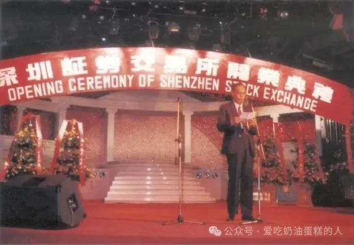
皮克（Frank N. Pieke）用这一术语描述「本土社会主义观念和实践」与西方「新自由主义思想和实践中的治理观念与技术」发生的混合。这些治理技术被用来支撑、现代化并强化党在中国社会中的列宁主义领导地位（Pieke 2009: 9–10）。何绰越（Cheuk-Yuet Ho）也把新社会主义描述为「市场与产权逻辑同列宁主义党国权力结构之间的一种非惯常的聚合，并与未受玷污的社会主义目标结合而成为整体」。在这一秩序中，「人们被要求在日常生活中行使『选择』，并把个人责任作为主要的经济伦理」（Ho 2015: 10–11）。
沿着这些研究对新社会主义的界定，我们把1980年代以来在上述混合过程中形成的治理和主体塑造方式称作「新社会主义治理术」。同西方自由主义政体中的治理术一样，它不能被简化为国家控制。然而，新社会主义治理术虽然在地方实践中常常是临时拼接的、不稳定的（Sigley 2006: 489；Ho 2017: 12–14），却并非纯粹偶然形成的集合体。它受一个政治政权的战略塑造。这个政权以可见或不可见的方式把自己的意志投射到人口之上，并在过去数十年间建立起规模庞大、纵向组织的装置，配备越来越精细的社会工程工具，用来塑造人的主体性，并在远距离上引导人的行为。
在这个意义上，新社会主义治理术延续了毛主义通过自上而下的宣传、社会重组、艺术与教育来实现社会总体改造的鲜明传统（Dutton & Hindess 2016: 22–23）。之所以称它为「新社会主义」，还因为它公开宣称要使社会主义重获生命：在经典社会主义指令经济和毛主义革命动员都已耗尽其历史动力之后，重新开启社会主义建设的新阶段。
新自由主义与新社会主义治理术的比较
━━━━★━━━━
除了新社会主义语境中缺乏自由主义法律权利和自由之外，新自由主义与新社会主义治理术之间还有一个结构性的区别。在新自由主义条件下，专家权威分散在由各种制度、组织、专业协会和国家机构构成的去中心化网络中，这些单位彼此之间往往保持相对独立。在新社会主义治理术中，不少专家权威、话语和技术看起来与西方相似，也参与同一套全球科学知识与国际技术规范的流通。但它们从未完全独立，而是在制度上锚定于中央化的国家和党组织。后者运用自身的技术，确保这些权威和技术符合党的目标，并力求使这种服从出于自愿和自我导向。
新自由主义治理术把自己隐藏在一种已经自然化的意识形态之后：经济自由、个人能动性以及常识。它所服务的金融与企业精英具有分散的利益，而这些精英则把自己隐藏在选举政治和文化战争的党派戏剧背后。新社会主义治理术则恰好相反。它对自己的目标、方法以及它所服务的中央化政党完全公开。颇具反讽意味的是，这种透明本身反而成了最主要的遮蔽物：权力的对象往往对其中编码的宣传耸耸肩、不予理会，但这些话语又在不断渗入公共与私人空间。
新自由主义治理术旨在「有战略地创造社会条件，鼓励并要求生产出经济人：这种个人在道德上有责任依据市场原则，运用理性选择和成本收益计算来穿行于社会领域，并排斥一切其他伦理价值和社会利益」（Hamann 2009: 37）。新社会主义治理术追求的主体则更为复合。它试图把三种主体性熔合为一个内部一致的政治主体，而每一种主体性背后都对应着不同的政治理性。
第一种是社会主义主体性。它忠于党的超越性权威，并信任党对市场和民族的管理。第二种是市场主体性。主体能够以生产者和消费者的身份，在市场经济中自主而有效地行动。第三种是文明的中国主体性。主体体现中华文明的优秀美德与传统，并至少与自由主义西方社会处于同等水平，甚至更为优越（Palmer 2019）。这三者的综合天然不稳定，因为它们各自依赖的权威体系往往无法通约：第一种依靠社会主义意识形态和党组织，第二种依靠「国际的」——也就是欧美的——学术话语、制度、专业知识和规范标准，第三种则扎根于大众文化运动及其网络。
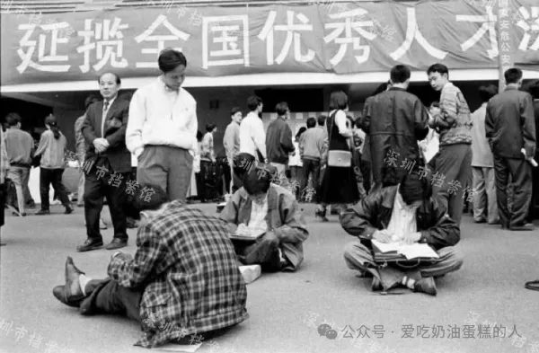
深圳人才招聘会，1990年代。 求职者通过竞争、选择和人才流动进入新的劳动力市场，但组织这一市场的仍是政府人事体系。
新自由主义的理性与技术被吸纳进来，用于塑造市场主体性。但新社会主义治理术最终想生产的，是愿意参与这样一个政治工程的主体：在党的领导下复兴中国古老而辉煌的文明，使中国重新回到世界诸民族的中心位置——即使这些主体可能对政治与意识形态本身漠不关心。
新自由主义治理术的权威是去中心化、分散化的，其网络并不与某一个民族国家的疆界重合。虽然权威知识和规范的生产地点高度集中在美国与英国，但它们会通过欧盟、世界银行、跨国公司、国际非政府组织和咨询公司等机构在全球实施。英国的前殖民地，如香港、新加坡和澳大利亚，则构成亚太地区的重要节点。与之相比，新社会主义治理术直到不久前仍被限制在中国大陆的领土范围之内。不过，与中国「软实力」对外投射，以及管理海外中国企业和「一带一路」国家中的经济特区相关的影响技术，都显示这种治理术可能向中国境外延伸。
中国虽然是新社会主义治理术的发源地，但其他社会主义政权在引入市场改革之后出现的治理转型，例如1990年代以来的越南和古巴，以及近年开始变化的朝鲜，也可以称为「新社会主义」。这些转型同样试图借助列宁主义组织与意识形态、市场理性以及民族认同建构的混合，为社会主义注入新生命。 在一些情形下，中国的新社会主义还被明确当作改革范本。因此，即使中国是新社会主义治理术的中心，也不能把它简单命名为「中国式治理术」。治理技术本身会跨国流动。新自由主义与新社会主义的区分，只是一种分析工具，用来凸显两者各自的特性。两者之间没有清晰边界，借用与混合始终在发生。
协调与翻译
━━━━★━━━━
新社会主义治理术面临的一个关键问题，是三种治理理性及其权威各自都具有离心倾向。 任何一股力量单独发展，都可能把社会推向彼此冲突的方向。中国社会主义的意识形态和实践始终有可能滑向保守主义或一种抵制改革、试图把时钟拨回毛时代的「左倾」倾向；围绕市场形成的话语、标准和权威则倾向于同西方新自由主义接轨；同中华文明相联系的价值又可能产生非社会主义形式的「中国性」，并催生以儒家或中国宗教为权威来源的大众团体和运动。对于新社会主义治理术而言，翻译与协调机制因此不可或缺。
这些不同治理方式所产生的行为，需要被重新定向到党所规定的目标上。党的宣传机构，是完成这项协调工作的主要工具。一些观察者把这一体系描述为一个庞大的自上而下装置，通过大规模传播党的路线，运用说服和社会控制技术来marketing dictatorship（Brady 2008, 2012；Shambaugh 2007）。这里我们更关心另一个问题：如果把宣传理解成「思想管理」（thought management）（Brady 2012），它也可以被看成一套制度、渠道和反馈回路。多元话语正是在这些回路中被翻译、协调，然后再传播出去。
在中华人民共和国，所有知识和话语生产机构，包括大学、企业、研究所、专业协会、媒体、文学艺术团体和社会组织，都直接或间接接受中共中央宣传部的控制或「指导」。中宣部又接受由政治局高级成员领导的中共中央宣传思想工作领导小组的指令（Brady 2008: 9–10）。如果只把这一体系理解为党通过自上而下灌输意识形态来限制自由，就会错过其中真正的协调机制。宣传系统或许更适合被理解为一个生产和传播权威知识与话语的网络。
这个网络中，有些节点本身就是意识形态正统的生产核心节点，例如宣传部本身。中央级媒体如《人民日报》和中央电视台与这个核心也只有很短的距离。另一些机构则分布在离中心越来越远的位置。不同学科、研究机构、媒体、文化协会和社区团体，都可能处在这一连续谱的不同位置。名义上，它们全部受宣传体系的权威支配，并受到相关指导和审查。但在这些机构内部，各种不同话语仍然并存。它们遵循各自领域特有的理性，同时又与中心生产的「党话语」保持区别，并以各自方式表达这种话语。
要把如此异质的部分组合成一个既稳定又能运动、同时仍处在意识形态正统框架之内的体系，「翻译」机制至关重要。尼古拉斯·罗斯（Nikolas Rose）曾这样界定：「在翻译的动态过程中，想要治理的权威所追求的目标，会同那些作为治理对象的组织、群体和个人各自的计划形成协调关系。正是不同形式的翻译过程，把政治机构、公共机构、经济、法律、医疗、社会和技术权威，同形式上自主的实体——公司、工厂、压力集团、家庭或个人——所抱有的愿望、判断与抱负连接起来」（Rose 1999: 48）。
我们关于宗教治理的研究可以说明这种翻译如何运作。一个例子，是把「宗教界」的代表——即官方登记宗教协会的领导者——同「学术界」的教授和研究人员，以及工作涉及宗教事务的「政界」干部召集到一起的会议和研讨会（Palmer 2009）。在中国，「界」指某一专业化社会领域中获得官方承认的全部权威主体（Chau 2018）。这三个「界」各自在自己的网络中使用的语言很可能不可通约：宗教领袖使用神学或宇宙论语言，学者借助西方社会科学理论和认识论，官员则首先受工具性的政治考量驱动。
当这些人被召集到一起，讨论诸如「传统文化与生态文明」之类的议题时，邀请函与开幕讲话往往先以官方宣传语言划定问题框架。不同领域的参与者便在会议中学习如何把本领域的话语翻译成党的话语，把自己的利益、主张、建议、分析以及忠诚表达，转换进一套共同语言。学者在这里尤其重要，因为他们能把宗教语言翻译成世俗的社会科学语言。但这种语言与中国化马克思主义正统之间仍不相契合，因此还需要再翻译一次，进入党的话语体系。
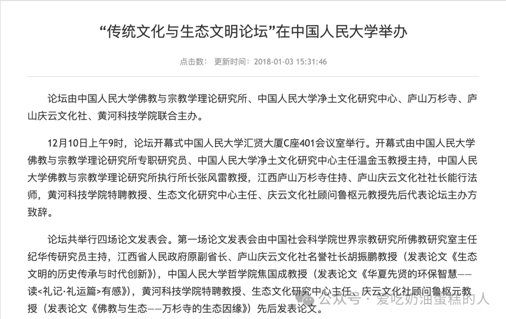
学者在日常学术工作中通常不使用「党话语」，但制度会有意识地提高他们进行这种翻译的能力。我们接触过一个案例：某省级社会科学院的一批宗教研究者，被借调到不同政府部门工作一年。其中一名学者进入宣传部门，同职业宣传干部一起为市长撰写政治讲话。她坦承，自己的学术语言与同事的政治语言差异极大。通过不断传阅、修改讲话稿，她一面把学术训练形成的视角注入文本，一面学会政治讲话的语言。
另一个案例中，一名研究宗教与人权问题的学者已经熟练掌握党的话语，也很擅长把「自由主义」立场翻译成官方术语。后来，他被吸纳进一场官方政策咨询文件的起草会议。所有参与者被集中在一个封闭场所中工作两周，在此期间，不同立场和意见被反复协商，最终压进文件的具体措辞。一些学者甚至形成两套平行的发表轨道：公开的学术论文遵循国际期刊流行的认识论规范，内部报告可能处理同一议题，却改用政治语言和政治取向来书写。
这些例子不是为了证明宗教领袖和学者面对国家时仍保有某种独立性。它们说明的是，经过公开或不公开的翻译过程，这些人获得了说党的语言的能力，也学会用这种语言表达自己的看法和关切。与此同时，多样的信息与意见仍能沿体系向上渗流，只是在这个过程中被打磨，并与官方框架「协调一致」。这些材料进入不断流通的文件与草稿，最后又被翻译成官方讲话、声明和政策，再通过宣传体系向外传播。正是这些翻译技术、制度安排和程序，使党能够承担协调者的角色，使党的话语保持通行能力，并获得更广的综合覆盖与更高的复杂程度。党组织因此被置于整个系统的中心，而围绕它运转的是一批随时可能离心的部门性权威、话语和技术。
精神文明：协调与翻译的框架
━━━━★━━━━
要使协调成为可能，就需要一个统一的意识形态框架，使彼此不同的观点和语言能够在其中被翻译并加以调和。我们的论点是，这一框架在市场改革启动之初便已奠定，并在此后几十年通过「建设社会主义精神文明」运动逐步搭建起来。
「社会主义精神文明」这一话语最早出现在1979年。邓小平在第四次全国文学艺术工作者代表大会上提出，中国除了要「建设高度的物质文明」，还必须「提高全民族的科学文化水平，发展高尚的丰富多彩的文化生活，建设高度的社会主义精神文明」（Deng 1983: 208）。
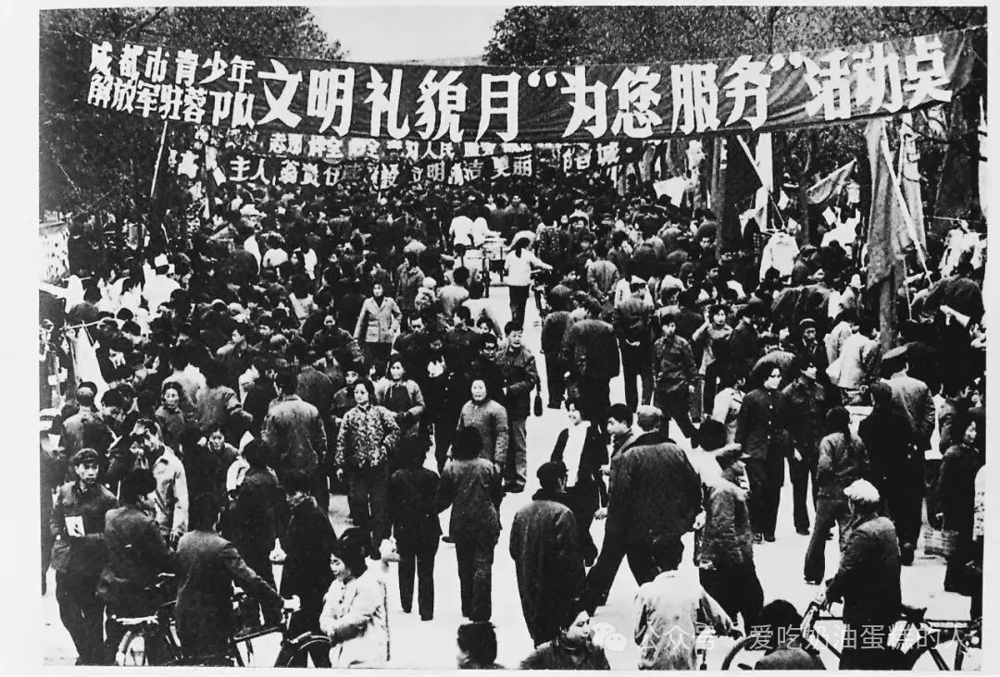
1982年第一个「全民文明礼貌月」期间，青年服务队在街头开展「为您服务」活动。「五讲四美」、学雷锋和治理「脏乱差」，成为社会主义精神文明进入城市日常生活的重要方式。
整个1980年代初，「精神文明」逐渐成为应对集体价值和道德滑坡的一整套努力的总称。市场经济使工具性和个人主义价值更为普遍，党则重新强调意识形态对于文化建设的引导作用。市场改革放开了市场导向的主体性和工具理性，它们可能推动「物质文明」建设，但党同时试图用建立在文化、道德和意识形态基础上的精神文明来约束市场逻辑的过度扩张（中共中央 1986）。
1980年代前中期，精神文明主要还是一种意识形态表述。除了不时发动「社会主义礼貌」之类的动员之外，几乎没有制度性实施手段可以落实这一口号（Dirlik 1982）。风波之后，政权担心中国会重蹈苏东集团放弃共产主义的道路，于是决意加强党的权威。精神文明由此成为实现这一目标的一套主要非强制性框架。自1990年代中期至今，围绕精神文明形成的策略和技术越来越细密。全国建立起省级和地方「文明办」体系，由宣传部门下属的中央文明办统筹。各级机构按照道德、卫生、管理、文化和「政治风气」等指标，对具有「文明」示范性的家庭、企业、街区、村庄和城市进行考核、命名和奖励。文明办还负责推动志愿服务、文明公共行为，以及革命传统与古典文化传统的传播（Erbaugh 2008）。
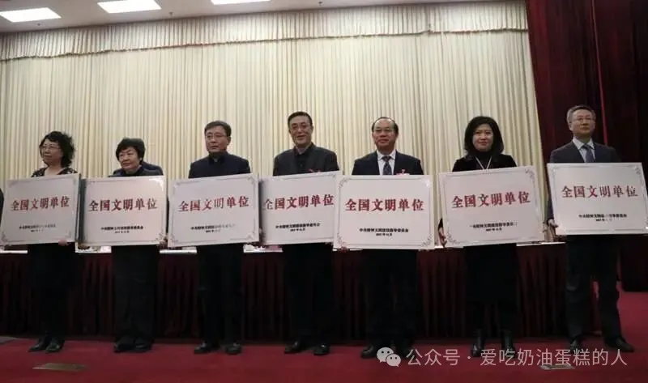
2018年，全国卫生计生系统「全国文明单位」代表接受授牌。从早期群众性的「文明礼貌月」到文明城市、文明单位等制度化创建，「文明」逐渐成为一套包含考核、命名、示范和表彰的治理技术。
社会主义精神文明建设由此带来了一种受到控制的政治动员。改革开放拓展了新的自由空间，精神文明试图把这些自由引入与党国之间的生产性关系。其途径是把公共且强制性的阶级斗争政治，转变为一种处在政权划定边界内、私人化且自愿参与的权力形式。精神文明框架因此把毛时代偏重「否定」的治理方式，转向一种「肯定性」方式（Dynon 2008: 90, 92）。「斗争」伦理要由「发展」伦理取代。物质文明可以通过理论上无限增长的经济指标来衡量，精神文明则可以表现为人口「素质」不断提高，以及教育、文化、健康与行为指标持续增长。这一框架试图重新征用后毛时代政治主体性中一度被闲置的解放潜能，主动吸引普通人、知识分子和干部投入建设中国「文明素养」的创造性努力，提供「一种新的伦理气质，并把全国的能量导向新的、建设性的方向」（Chen & Jin 1997: 64）。
在官方话语中，「社会主义精神文明」最终成了一个极宽的总括性概念。它既包括重新强化的马克思主义意识形态与政治象征，也涵盖志愿服务、「素质」培养、成为知情的消费者、传统中国价值、体育、艺术和知识活动。站在外部观察，这个概念很容易被看成一个空洞、缺乏内在一致性的容器，凡是不属于市场「物质文明」的获准文化与意识形态实践，似乎都可以被塞进去。正因为如此，它经常被当作改革时代党在意识形态上失去一致性的证据而遭到嘲讽（X. Wang 2002: 17）。关于社会主义精神文明的学术研究因此重申了广泛存在的一种判断：党的意识形态与市场改革下社会变迁的现实之间存在巨大裂缝；并且，除了路易吉·汤巴（Luigi Tomba，2009）外，这些研究都预测这场运动最终会失败（Dirlik 1981, 1982；Anagnost 1997b；Bakken 2000；Dynon 2008, 2014）。
自我的问题化
━━━━★━━━━
然而，精神文明实际上提供了一个相当完整的框架，使国家支持的话语秩序能够不断被问题化，并自主地再生产。它并不只是把国家意志烙印在被动个体身上。相反，它也在公共领域开启了多元争论的空间，并进入个体自身的反思活动。个人在快速社会转型中建构自我意识与人生方向时，也会把这一框架内化于自身反思之中。
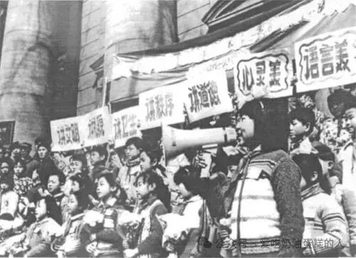
南京中小学生走上街头宣传「五讲四美」。改革初期的精神文明建设把文明、礼貌、卫生、秩序和道德转化为可以被宣传、学习和自我检查的日常行为规范。
改革初期，一场被感知到的道德危机受到以下因素的推动：使追逐个人利益获得正当性的新市场主体性、功利主义理性的常态化（Chan, Madsen, & Unger 1984），以及个人欲望与自由越来越自由地通过消费得到表达（Rofel 2007；Zhang & Ong 2008）。工具性的市场价值渗透到所有社会阶层。个人奋斗、创业精神、赚钱致富都被公开鼓励。与此同时，对这些态度和实践的道德批评也极为普遍。这反映出人们对与这些趋势相联系的道德滑坡、冷漠、失礼与腐败的普遍公共焦虑（Yan 2009）。党借助精神文明话语吸纳这些焦虑，把它们重新纳入意识形态正统的表述；同时通过公共讨论和宣传建立支持道德批评的制度装置，并提出提高全体人口「素质」的计划。
借助「物质文明／精神文明」的区分，党国一方面把功利性的「小我」所具有的能量引向物质文明建设，另一方面又把自己树立为乌托邦式「大我」的守护者，使自己成为民族道德意识的体现者。
进入1990年代以后，精神文明的推进越来越围绕自我与「素质」的「问题化」展开（Kipnis 2006）。 人类学研究已经充分说明，「素质」这一道德话语支撑起极为灵活多样的自我技术。它们要把人改造成行为得体的主体，使其能够在威权社会中独立、自愿地穿行于自由市场。最初，「素质」随着自上而下推行的独生子女政策进入汉语词汇。这个政策同时包含自我规制，以及源自控制论中的「控制理论」的强制性生命政治（biopolitics）（Greenhalgh 2005）。通过计划生育运动、强制堕胎和绝育来减少人口的同时，国家也推广各种自我修养技术。此后，「素质」迅速成为官方和日常语言中无处不在的概念，用来标示现代城市公民的文明举止、世界性、职业素养和精致消费品味。
「低素质」成为一种委婉的道德判断，尤其常被加诸工人、农民和少数民族（Lin 2011；H. Yan 2003）。「高素质」则既是社会区分的标志，又是一种令人向往的理想。被想象为「先进」的外国人，尤其欧洲人和日本人，其公共礼仪与社会伦理常被当作这种高素质的体现。
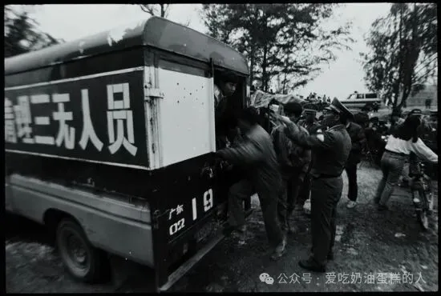
1993年3月，警方在罗芳村清理「三无」人员。
「素质」于是成为寻找新型中国城市中产阶级身份的一种媒介。 这种身份被设想为从城市中心向农村边缘辐射。围绕素质，一整套由特定专业知识支撑的技术、干预与欲望动员被部署出来：学校、补习机构、人力资源培训师、礼仪顾问、医疗机构、广告公司、心理治疗师、人生教练等，都参与训练人们提高「素质」，或者增强他们追求「素质」的欲望（Anagnost 1997a；Cartier 2016；W. C. Ho 2004, 2010；Jacka 2009；Lewis 2002；Pan 2006；Tomba 2009）。
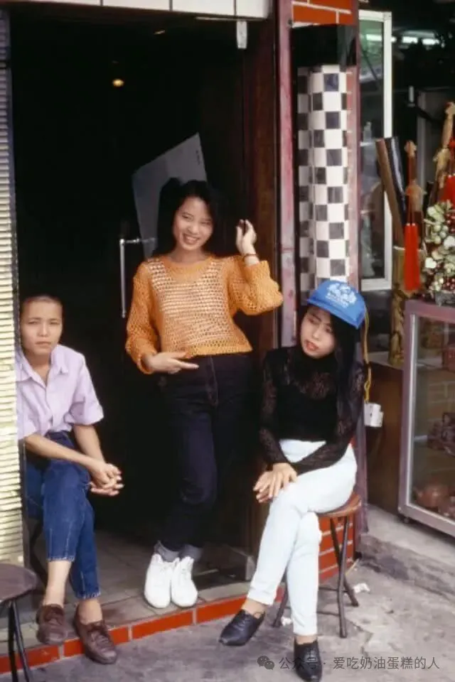
深圳，1990年代初。 发廊、美容、服饰和新的消费空间伴随移民城市一起扩张。对于许多进入南方城市的年轻人来说，「成为城市人」越来越通过外表、礼仪、消费方式和职业形象表现出来。
不过，基普尼斯指出，不少研究「低估了处于相对从属位置的领导者和普通人把官方话语扭转为极具地方性的用途的程度」（Kipnis 2007: 395）。西格利（2009）也说明，「素质」话语可以被用于彼此矛盾的目标，甚至反过来批评党的干部。我们认为，素质实践的这种「异行性」（heteropraxy）恰恰体现了新社会主义治理术的运行方式。关键并不在于所有人是否服从党国宣传的口号，也不在于他们是否出于私人目标而颠覆官方话语。关键在于，人们借助官方话语提供的语言，自由地参与对公共和私人行为的判断与问题化。
一个最初来自党的社会工程计划的规范性话语，被各种公共与私人行动者不断挪用，最终成为日常语言中的常用词。人们用它评判别人，也评判自己。即使他们并不知道、也不关心「素质」如何嵌入社会主义精神文明的整体意识形态框架，也仍在参与党对于问题的基本界定。「素质」已经深入人的身体化主体性和欲望。正是在这里，私人欲望与个人抱负，同党为社会主义中国文明勾画的集体未来发生重叠。
文化的问题化
━━━━★━━━━
建设社会主义精神文明中的「精神」究竟指什么，没有被明确界定。正是这种含混，给围绕中国文化与文明展开问题化留下了很大空间。精神文明话语的模糊性，使不同意识形态倾向的知识分子和社会运动都可以加以借用。
这种文化问题化首先来自知识分子对于六十年代所造成的文化破坏的焦虑。对传统丧失的哀叹，又常常同另一种判断纠缠在一起：对毛泽东的个人崇拜与革命暴力之所以走向过度，是中国文化自身某种缺陷的表现，而补救办法只能来自向西方文明学习。经历数十年意识形态单调之后，人们突然对文学、哲学和传统文化爆发出巨大兴趣，「文化热」在1986年达到第一个高潮（Chen & Jin 1997），现代主义者、实验主义者以及「寻根文学」作家都在其中获得了舞台（J. Wang 1996）。文化热虽然使用「文明复兴」的语言，却大量借助西方哲学与社会理论，重新批判性审视「中国传统文化的优点、弱点与可能性」，并重新判断中华文明在当下和未来的意义（Gu 1999: 389）。
整个1980年代到1990年代前中期，各类大众热潮、风尚和灵性运动迅速增长，越来越多地围绕那些曾经被斥为「封建」或「迷信」的中国文化展开重新评价和现代化改造。「易经热」「儒学热」「武术热」「气功热」都曾在不同时期吸引数以百万计的追随者（Palmer 2007）。其中许多运动明确使用精神文明建设的词汇（Winiger 2018, forthcoming）。
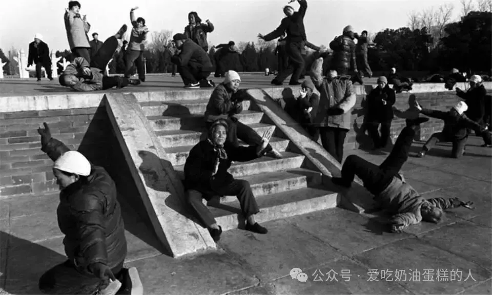
事实上，精神文明话语打开了一块意识形态空间，使这些文化问题能够被公开讨论，使相关运动获得合法性，同时又提供了一个可供翻译和协调的框架。
例如，1984年年中，北京大学一些中国哲学教师重新启用了传统儒家书院的模式。这个地方性倡议最终推动建立「中国文化书院」，其目标是「拓展与传播」并「现代化」中国文化。书院聚集了一批资深学者，得到中共中央总书记胡耀邦支持，并隶属于北京大学马克思列宁主义研究会（Gu 1999: 409, 410）。当时的儒家思想仍因其「封建遗留」身份而在意识形态上带有嫌疑，但书院资助并推动了一批颇有影响力的儒家文化学术著作，刺激了关于儒学的学术话语生产。这些学术话语随后能够被翻译进精神文明框架之中。
学术合法性的获得，又反过来支撑起一波活跃的大众和基层文化运动：宗族祠堂与祖先祭祀恢复，私人书院重新出现，儿童读经班扩张，为希望提升文化资本的企业家开设的「国学」课程与机构大量涌现，纪念孔子和黄帝的仪式也重新兴起。跨越不同社会「界别」之后，同一套话语可以在党的语言、学术语言和文化权威的语言之间来回流通、不断翻译。诉诸「精神文明」及其他官方框架，为这一过程提供了合法性外衣。
到了21世纪第二个十年，「儒学热」已经成为大众现象，并在教育、领导力培训、管理培训、出版以及生活方式消费中实现市场化，文化主流对传统价值和传统文化的欣赏也因此增强。与此同时，它还成为活跃的知识运动，儒家学者同自由主义者和左翼知识分子展开激烈公共争论（Billioud & Thoraval 2015）。官方话语从未完全认可这些运动，却会选择性吸收其中已经获得社会流通、并且与精神文明表述兼容的关键词，例如孝、德、和谐、诚信等（Brady 2012: 62–68）。
于是，运动中的一些象征、实践和审美形式被转化为政治上无害的消费品。对于另一些内容，党则会淡化并把其中某些象征、情感和审美元素吸收进精神文明话语，并投入资源、制定政策和计划，推广经过意识形态净化的官方版本。
并非所有形式都能被翻译和协调。尤其当某些群体发展成大规模灵性或宗教运动时，无论被忽视、容忍，还是遭到暴力镇压，它们仍继续存在。不过，通过这一过程，党进入了许多原本发端于基层的运动内部，吸收它们的能量和概念，用来丰富自身，并把这些资源纳入更广泛的政治计划。江泽民提出，要通过精神文明建设弘扬「优秀传统文化」（Jiang 2002）。这些所谓「优秀」成分显然不可能从党内找到，因为共产党自身的大部分历史恰恰是在反对传统文化。真正可供抽取的资源，来自改革后由大众运动重新打开、并随后被翻译进社会主义精神文明的活跃文化世界。
社会的问题化
━━━━★━━━━
精神文明最后还打开了对「社会」本身进行问题化的空间。革命年代，共产主义「社会」是一条乌托邦地平线，只有通过阶级斗争清除封建、资产阶级和帝国主义因素之后才能建成。市场改革之后，党和国家的使命被重新表述为代表并服务整个社会，其中也包括商业阶层，而不再只代表并服务无产阶级。随着阶级斗争的结束，「社会」整体成为话语和干预对象。
新的分界把社会主流同更为贫困和边缘化的人口区隔开来。农民、少数民族、老年人、残障人士、农民工等群体往往被归入后者，也常被污名化为「低素质」。治理话语、专业知识和干预手段于是把目标放在设计项目和政策，以管理、整合这些人口，并提高其经济与文化发展水平。
社会被问题化之后，还出现了另一个紧密相关的问题：怎样管理那些由社会内部自发产生、旨在解决社会问题的运动和倡议？革命传统中的唯意志主义精神在文化大革命的长期斗争之后已经耗尽，需要重新激活。但这种社会能量不能再次流向政治斗争，而必须被引向符合精神文明建设的、去政治化的服务活动。 与此同时，通过跨国流通进入中国的新自由主义治理理性和技术，又带来了慈善、志愿服务、公民社会等话语。国际非政府组织进入中国，海外基金会与资助者也带来一整套管理模式和「最佳实践」。中国大学中的NGO和公民社会研究中心又把这些方法转介给迅速增长的基层倡议，使其学习按照「国际」NGO规范进行组织和行动。
在新社会主义治理术下，问题变成了如何管理这一趋势：既为这些倡议划定可活动的空间，又要把它们从自由主义公民社会可能产生的政治行动主义中引开，转化成可以由党组织或那些可以信赖其会服从的组织加以使用的动员与组织形式。
整个1980年代，官方曾通过零散的自上而下运动，组织「义务劳动」和提高公民意识的项目来推进精神文明。这些活动像毛时代政治运动疲惫的影子。一个已经厌倦为集体牺牲的社会，对这种号召反应冷淡。
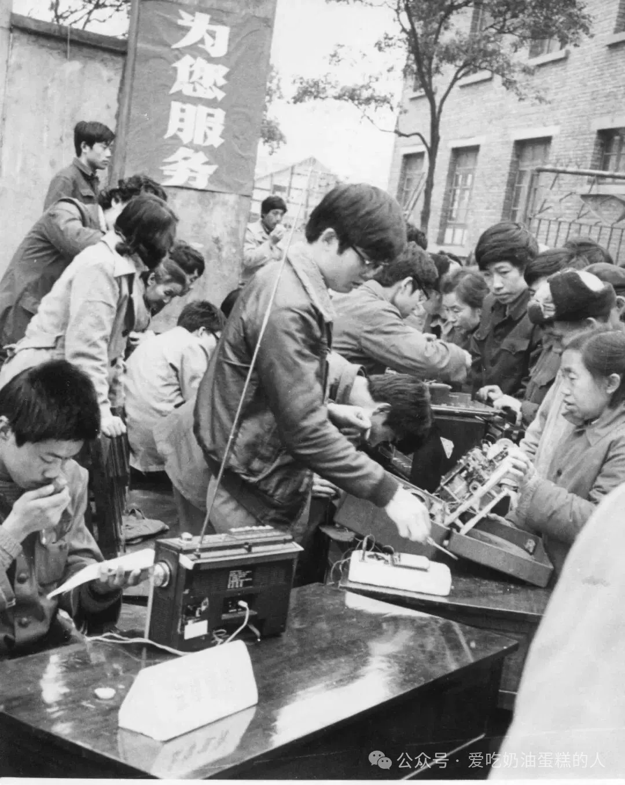
1983年3月5日，四川峨眉县，志愿者免费为群众维修收音机。学雷锋、便民服务与文明礼貌运动在改革初期逐渐交叠，形成后来志愿服务体系的重要历史资源。
到了1990年代，一些城市开始出现新的志愿服务模式。这些模式既来自地方自发实践，也借用了香港和海外NGO的经验。基层NGO不断增长的同时，一套由党管理的志愿服务基础设施也逐步建成。它要提前推动、满足、吸纳并引导公众参与公共事务的欲望，由此形成政治上可控的「被管理的公民社会」（managed civil society）（Perry 2014）。
随着城市中产阶级兴起，越来越多青年乃至年长者都愿意参加服务活动。海外组织和专家提供的专业志愿服务与NGO管理技术、「最佳实践」，被吸收到党领导的志愿体系中。这个体系又不是凭空建立，而是直接接续毛时代留下的群众动员基础设施。
精神文明建设办公室、共青团、民政部和居委会逐步建立起识别社区需求、设计项目与活动、招募、登记和分配志愿者的制度。注册志愿者获得「志愿者证」，参与人数与活动情况被制成表格、上报和汇总，由负责把志愿服务纳入社会主义精神文明建设的机构统一掌握。新型志愿体系还同「学雷锋」传统结合起来。毛时代被塑造成无私奉献英雄的军人雷锋，如今成为党支持的志愿服务象征（Palmer & Ning, forthcoming）。
「被管理的公民社会」涵盖了大量难以放进传统二分法的组织。过去，人们往往把中国社会组织划分为「独立」的基层NGO与具有社团主义色彩的GONGO（government-organized NGO，政府组织的非政府组织）。过去二十年，这两类组织之间的界线越来越模糊（Liu & Palmer, under review）。社会组织登记政策，以及通过招标「购买社会服务」的项目，使基层组织获得合法且正当的角色，能够代替国家承担某些社会福利功能。
一旦进入项目申请、监测和报告的资金流程，原本非正式或处境不稳定的社区团体就被改造成非营利的创业型社会服务组织。它们的活动被引导到国家资助机构认为适当的福利议题上（Peng 2016）。社会工作作为一种专家职业也逐渐专业化，为社会组织和国家福利机构提供受过训练的人员，使其能够处理项目、规章与资金管理。
刘清（Liu Qing，2017）把某些现象称作「以NGO为基础的治理术」。在农村发展项目中，NGO旨在通过补助、激励和参与式方法改变农民行为，鼓励他们在2006年启动的「社会主义新农村」建设框架内，建立能够自我治理的合作经济组织（Ahlers & Schubert 2009）。我们研究过广州一个基层NGO。它由一所重点中学的学生创立，最初旨在帮助农民工子女，后来与当地「党群社区服务中心」合作。后者是一类新的党组织形式，目标是把党的组织触角进一步延伸到社区，在一定程度上承担西方社会中社区团体所发挥的功能。
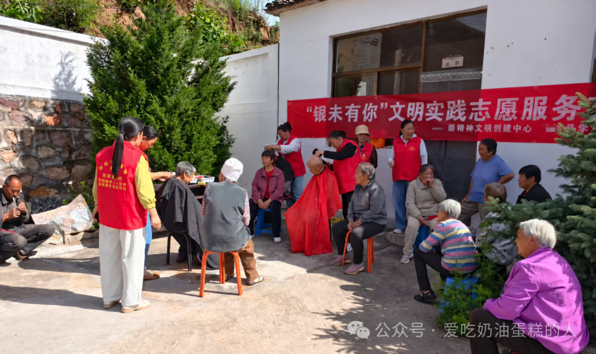
社区党群服务和社会治理中心的党员志愿服务队。志愿活动在社区层面被纳入固定场所、组织身份和服务项目之中，显示基层自主参与与党组织治理网络之间不断加深的连接。
这个学生NGO使用党群服务中心的场地，招募学生志愿者陪儿童玩模仿《大富翁》的游戏，让孩子在游戏中学习保险逻辑、营销技巧和财务管理。这一案例把新社会主义治理术的逻辑充分体现出来：党试图鼓励并便利基层倡议和志愿活动，同时吸纳这些团体，让它们帮助所谓「低素质」人口提高在市场经济中进行自我管理的能力。
「新社会主义治理术」这一分析视角，也能重新照亮中国的「公民社会」问题。公民社会概念来自古典自由主义治理理性。它假定国家与社会之间存在明确边界，并以法律保证社会群体自主结社的权利。由于中国并不存在同样清晰的国家—社会边界和法律制度，不少学者否认中国存在公民社会的可能性，或者把其范围限定得极窄（Author 2019）。但治理术研究早已指出，在西方新自由主义模式下，社会福利和社区管理被外包之后，国家与公民社会之间的界线同样不断模糊（Pyykkönen 2015）。
新自由主义和新社会主义的公民社会都会采用创业型和管理型方法，参与「社会创新」，帮助企业推进「企业社会责任」，也协助国家管理边缘人口。然而，新自由主义公民社会组织可以取得代表社区和利益相关者的权威地位，进入去中心化、跨国化的治理机构网络。它们甚至可能获得「向权力说真话」的权威，组织社会行动，制衡国家或企业越界。新社会主义公民社会则由「没有权威的自治空间」构成，或者说，是处在党的权威之下的自治。新社会主义治理术旨在创造空间、提供资源，鼓励自愿动员与基层倡议，同时又要把这些社会力量引向一个方向，使它们的能动性最终仍能表达政权所代表的利益。
结论
━━━━★━━━━
我们所说的新社会主义治理术，既不是新自由主义那种去中心化、偶然拼接的治理理性，也不能被理解成国家意志直接压在一群被动、犬儒、消极拖延的个人身上。它通过开放公共话语和集体行动的空间来运作。新社会主义治理理性在这些空间里与大众欲望、文化运动发生生产性的摩擦。自我、文化和社会由此不断被问题化，这些张力渗入个人主体性和大众运动，同时又加强党作为超越性权威的地位。
在这一过程中，「文明」的政治主体在追求消费、旅行、宗教、性、文化和其他个人兴趣时，同时为社会主义精神文明作出贡献。通过协调与翻译的过程，精神文明的话语和制度框架同时也可以通过其自身面向社会的项目和宣传得到充实和扩展。经过「调和」后以「党话语」及其他宣传形式输出的内容显得僵硬，大多数人对此漠不关心，但这种僵硬实际上并不意味着它的失败。
党话语依靠一整套仪式化政治公式运转。这些公式只出现在正式化的官方讲话、新闻报道与文件中，在其他场景从不使用。正因如此，它逐渐具有一种「神圣语言」的地位。党的超越性并不主要来自这些话语的具体内容，而来自它们不可随意触碰的性质（Palmer & Winiger 2019）。表层的惯例化宣传，并不要求人真正相信、感兴趣或者理解党的教义。它只要求一种仪式性的服从表演：与神圣权力保持适当距离，对禁止公开讨论「敏感话题」的禁忌予以敷衍的尊重并加以维护，在正式场合遵守规定的修辞规范，在互动仪式中再现等级秩序，并参加必要的政治仪式。这样的表演会生产一种主体性，使个人感受到私人欲望与官方意识形态要求之间的裂缝。
于是，人们一面顺从党的要求，一面忽略这些要求。人们对意识形态没有兴趣，却用自己的创造性方式与新社会主义治理的目标保持一致。恰恰因为党话语与私人行为之间存在距离，个人才拥有一种看似没有束缚的能动性，而上述创造性方式正出自这种能动性。革命社会主义时期，宣传与实际行为之间的裂缝不被容忍，服从依靠强制维持，到文化大革命末期也因此引起广泛反感。新社会主义治理术则允许宣传世界与社会现实保持距离，同时不断在二者之间翻译与协调，使顺从和自由都能够服务于党的利益。
毛时代的文化生产被要求完全服务并表达党国意志。新社会主义条件下，党、社会与文化运动之间的翻译和协调，让后两者获得相当程度的自主性与行动空间。意见多元化因此成为可能，但这只会使对自由的管理更加有效，因为这种管理本身没有被识别为管理。人们对惯例化、仪式化宣传普遍冷淡，犬儒主义由此获得表达，而新社会主义治理术的理性则被遮蔽。
新社会主义治理术的非强制技术与福柯讨论过的其他更具强制性的治理形态协同运行，而且经常难以截然分开。这些形态包括主权，即国家暴力的壮观展示，以及规训，即借助知识体制从外部管理身体。自由主义治理本身也只适用于那些被判断为拥有足够自主性、能够进行自我治理的公民。对于被认为没有能力行使自由主义自主的人，需要规训式治理；对于决意摧毁自由主义国家的人，则会使用强制镇压（Dean 2002）。新社会主义治理同样依赖类似区分。
除此之外，新社会主义治理术依靠围绕一个超越性中心形成的协调回路运行。那些主动抵抗或破坏这些回路的社会行动者，不能适用非强制治理。此时，越来越强的强制干预被用来把社会主义精神文明强行施加到拒不服从的人口之上，尤其是受到「分裂主义」或「恐怖主义」分子「渗透」的藏传佛教或穆斯林社群等宗教或族群共同体；或者用来镇压并消灭法轮功或政治异议者等断然拒绝整套翻译与协调话语基础设施的群体。
在新社会主义条件下，强制和非强制两类治理技术都服务于同一目标：维持党的超越性权威，协调离心性治理理性，并稳定其可能引发的碎片化局面。于是，无论由国内产生还是从境外输入，替代性协调网络的增殖构成对党的生存性威胁，并同时受到强制性与非强制性权力的应对。
从治理术视角看，新社会主义的演进不能被缩减为一个自由增加还是减少的零和问题。更需要分析的，是自由如何同时被生产、划界与管理，以及在内外威胁感不断上升的条件下，强制治理与非强制治理如何彼此配合。由此来看，新时代并不意味着中国背离改革时代被认为存在的自由化趋势。更准确地说，它放大并进一步精细化了过去四十年逐步建立起来的新社会主义治理基础设施，其中既包括非强制技术，也包括强制技术。
1. Ahlers, A. L., & Schubert, G. (2010). 「Building a New Socialist Countryside」 – Only a Political Slogan?（《「建设社会主义新农村」——仅仅是一句政治口号吗？》） Journal of Current Chinese Affairs, 38(4), 35–62.
2. Anagnost, A. (1997a). Constructing the civilized community（《建构文明社区》）. In T. Huters, R. B. Wong, & P. Yu (Eds.), Culture & State in Chinese History: Conventions, Accommodations, and Critiques（《中国历史中的文化与国家：惯例、调适与批判》）, pp. 346–365. Stanford University Press.
3. Anagnost, A. (1997b). National Past-Times: Narrative, Representation, and Power in Modern China（《民族消遣：现代中国的叙事、表征与权力》）. Durham, N.C.; London: Duke University Press.
4. Bakken, B. (2000). The Exemplary Society: Human Improvement, Social Control, and the Dangers of Modernity in China（《榜样社会：中国的人类改造、社会控制与现代性的危险》）. Oxford: Oxford University Press.
5. Barnett, C. (2015). On Problematization: Elaborations on a Theme in ‘Late Foucault’（《论问题化：对「晚期福柯」一个主题的展开》）. Nonsite.org, 16.
6. Billioud, S. & Thoraval, J. (2015). The Sage and the People: The Confucian Revival in China（《圣人与民众：中国的儒学复兴》）. New York: Oxford University Press.
7. Brady, A.-M. (2008). Marketing Dictatorship: Propaganda and Thought Work in Contemporary China（《营销专政：当代中国的宣传与思想工作》）. Plymouth, UK: Rowman & Littlefield.
8. Brady, A.-M. (2012). China’s Thought Management（《中国的思想管理》）. New York, NY: Routledge.
9. Bray, D. (2006). Building ‘Community’: New Strategies of Governance in Urban China（《建设「社区」：中国城市治理的新策略》）. Economy and Society, 35(4), 530–549.
10. Bray, D., & Jeffreys, E. (Eds.). (2016). New Mentalities of Government in China（《中国的新治理心态》）. Routledge.
11. Cartier, C. (2016). Governmentality and the urban economy: consumption, excess, and the ‘civilized city’ in China（《治理术与城市经济：中国的消费、过度与「文明城市」》）. In D. Bray & E. Jeffreys (Eds.), New Mentalities of Government in China（《中国的新治理心态》）, pp. 56–73. Routledge.
12. Central Committee of the CCP. (1986). Zhonggong zhongyang guanyu jingshen wenming jianshe zhidao fangzhen de jueyi（《中共中央关于社会主义精神文明建设指导方针的决议》）.
13. Chan, A., Madsen, R., & Unger, J. (1984). Chen Village: The Recent History of a Peasant Community in Mao’s China（《陈村：毛泽东时代中国一个农民社区的近代史》）. California, CA: University of California Press.
14. Chau, A. Y. (2018). A Most Awkward Sphere: The ‘Religion Sphere’ (zongjiaojie 宗教界) in Modern and Contemporary China（《最尴尬的一个「界」：现代与当代中国的「宗教界」》）.
15. Chen, F., & Jin, G. (1997). From Youthful Manuscripts to River Elegy: The Chinese Popular Cultural Movement and Political Transformation 1979–1989（《从〈青年文稿〉到〈河殇〉：1979—1989年的中国大众文化运动与政治转型》）. Hong Kong: Chinese University Press.
16. Ci, J. (1994). Dialectic of the Chinese Revolution: From Utopianism to Hedonism（《中国革命的辩证法：从乌托邦主义到享乐主义》）. Stanford, CA: Stanford University Press.
17. Deng, X. (1983). Deng Xiaoping wenji [Collective Works of Deng Xiaoping]（《邓小平文集》）, Vol. 2. Beijing: Renmin chubanshe.
18. Dean, M. (2002). Liberal Government and Authoritarianism（《自由主义治理与威权主义》）. Economy and Society, 31(1), 37–61.
19. Dirlik, A. (1975). The Ideological Foundations of the New Life Movement: A Study in Counterrevolution（《新生活运动的意识形态基础：一项反革命研究》）. The Journal of Asian Studies, 34(4), 945.
20. Dirlik, A. (1981). Socialism Without Revolution: The Case of Contemporary China（《没有革命的社会主义：当代中国的案例》）. Pacific Affairs, 54(4), 632–661.
21. Dirlik, A. (1982). Spiritual Solutions to Material Problems: The Socialist Education and Courtesy Month in South China（《用精神方案解决物质问题：华南的社会主义教育与文明礼貌月》）. South Atlantic Quarterly, 81, 471–501.
22. Dutton, M., & Hindess, B. (2016). Governmentality Studies and China: Towards a ‘Chinese’ Governmentality（《治理术研究与中国：走向一种「中国式」治理术》）. In D. Bray & E. Jeffreys (Eds.), New Mentalities of Government in China（《中国的新治理心态》）, pp. 16–29. Routledge.
23. Dynon, N. (2008). ‘Four Civilizations’ and the Evolution of Post-Mao Chinese Socialist Ideology（《「四个文明」与后毛泽东时代中国社会主义意识形态的演变》）. The China Journal, 60, 83–109.
24. Dynon, N. (2014). Civilisation-State: Modernising the Past to Civilise the Future in Jiang Zemin’s China（《文明国家：江泽民时期中国如何以现代化过去来文明化未来》）. China: An International Journal, 12(1), 22–42.
25. Erbaugh, M. S. (2008). China Expands Its Courtesy: Saying ‘Hello’ to Strangers（《中国扩大礼貌的边界：向陌生人说「你好」》）. The Journal of Asian Studies, 67(2).
26. Foucault, M. (1994). Dits et Écrits 1954–1988 IV: 1980–1988（《言说与著述，1954—1988》第四卷：1980—1988）. Paris: Gallimard.
27. Greenhalgh, S. (2005). Missile Science, Population Science: The Origins of China’s One-Child Policy（《导弹科学、人口科学：中国独生子女政策的起源》）. The China Quarterly, 182, 253–276.
28. Greenhalgh, S., & Winckler, E. A. (2005). Governing China’s Population: From Leninist to Neoliberal Biopolitics（《治理中国人口：从列宁主义到新自由主义生命政治》）. Stanford University Press.
29. Gu, E. X. (1999). Cultural Intellectuals and the Politics of the Cultural Public Space in Communist China (1979–1989): A Case Study of Three Intellectual Groups（《共产主义中国的文化知识分子与文化公共空间政治，1979—1989：三个知识分子群体的个案研究》）. The Journal of Asian Studies, 58(2), 389–431.
30. Hamann, T. H. (2009). Neoliberalism, Governmentality, and Ethics（《新自由主义、治理术与伦理》）. Foucault Studies, 0(0), 37–59.
31. Harvey, D. (2005). A Brief History of Neoliberalism（《新自由主义简史》）. Oxford: Oxford University Press.
32. Ho, C. Y. (2015). Neo-socialist Property Rights: The Predicament of Housing Ownership in China（《新社会主义产权：中国住房所有权的困境》）. Lanham, MD: Lexington Books.
33. Ho, W. C. (2004). The (Un-)Making of the Shanghai Socialist ‘Model Community’: From the Monolithic to Heterogeneous Appropriation(s) of the Past（《上海社会主义「模范社区」的建构与解构：从单一过去到对过去的异质挪用》）. Journal of Asian and African Studies, 39(5), 379–405.
34. Ho, W. C. (2010). The Transition Study of Postsocialist China: An Ethnographic Study of a Model Community（《后社会主义中国的转型研究：一个模范社区的民族志》）. World Scientific.
35. Hoffman, L. (2006). Autonomous Choices and Patriotic Professionalism: On Governmentality in Late-Socialist China（《自主选择与爱国职业主义：论晚期社会主义中国的治理术》）. Economy and Society, 35(4), 550–570.
36. Jacka, T. (2009). Cultivating Citizens: Suzhi (Quality) Discourse in the PRC（《培养公民：中华人民共和国的「素质」话语》）. Positions, 17(3), 523–535.
37. Jeffreys, E., & Sigley, G. (2009). Governmentality, Governance and China（《治理术、治理与中国》）. In E. Jeffreys (Ed.), China’s Governmentalities: Governing Change, Changing Government（《中国的治理术：治理变化，改变治理》）, pp. 1–23. Routledge.
38. Jiang, Z. M. (2002). Quanmian jianshe xiaokang shehui, kaichuang Zhongguo tese shehuizhuyi shiye xin jumian（《全面建设小康社会，开创中国特色社会主义事业新局面》）.
39. Joseph, J. (2012). The Social in the Global: Social Theory, Governmentality and Global Politics（《全球中的社会：社会理论、治理术与全球政治》）. Cambridge University Press.
40. Kipnis, A. (2006). Suzhi: A Keyword Approach（《「素质」：一种关键词研究》）. The China Quarterly, 186, 295–313.
41. Kipnis, A. (2007). Neoliberalism Reified: Suzhi Discourse and Tropes of Neoliberalism in the People’s Republic of China（《被实体化的新自由主义：中华人民共和国的「素质」话语与新自由主义修辞》）. Journal of the Royal Anthropological Institute, 13(2), 383–400.
42. Kleinman, A., Yan, Y., Jun, J., Lee, S., & Zhang, E. (2011). Deep China: The Moral Life of the Person（《深描中国：个人的道德生活》）. University of California Press.
43. Lewis, S. W. (2002). What Can I Do for Shanghai? Selling Spiritual Civilization in Chinese Cities（《我能为上海做什么？在中国城市推销精神文明》）. In S. H. Donald, M. Keane, & Y. Hong (Eds.), Media in China: Consumption, Content and Crisis（《中国媒体：消费、内容与危机》）, pp. 139–151. London: RoutledgeCurzon.
44. Lin, C. (2006). The Transformation of Chinese Socialism（《中国社会主义的转型》）. Durham: Duke University Press.
45. Lin, Y. (2011). Turning Rurality into Modernity: Suzhi Education in a Suburban Public School of Migrant Children in Xiamen（《把乡村性转化为现代性：厦门一所农民工子弟城郊公立学校中的素质教育》）. The China Quarterly, 206, 313–330.
46. Liu, Q. (2017). Peasant Resistance to NGO-Based Governmentality: A Case from Post-Quake Reconstruction in Sichuan（《农民对NGO治理术的抵抗：四川震后重建中的一个案例》）. Doctoral dissertation, University of Hong Kong.
47. Liu, Q. & Palmer, D. A. (under review). Chinese GONGOs and Participatory Approaches to Development: An Actor-Oriented Perspective（《中国的政府组织型非政府组织与参与式发展：行动者导向的视角》）.
48. Miller, P. P., & Rose, P. N. (2008). Governing the Present: Administering Economic, Social and Personal Life（《治理当下：管理经济、社会与个人生活》）. Cambridge/Malden: Polity.
49. Nonini, D. M. (2008). Is China Becoming Neoliberal?（《中国正在变得新自由主义化吗？》）. Critique of Anthropology, 28(2), 145–176.
50. Palmer, D. A. (2007). Qigong Fever: Body, Science and Utopia in China（《气功热：中国的身体、科学与乌托邦》）. New York: Columbia University Press.
51. Palmer, D. A. (2009). China’s Religious Danwei: Institutionalizing Religion in the People’s Republic（《中国的宗教单位：中华人民共和国的宗教制度化》）. China Perspectives, 2009/4, 17–31.
52. Palmer, D. A. (2019). Three Moral Codes and Microcivil Spheres in China（《中国的三种道德代码与微型公民领域》）. In J. Alexander, D. A. Palmer, S. Park & A. Ku (Eds.), The Civil Sphere in East Asia（《东亚的公民领域》）, pp. 126–147. Cambridge: Cambridge University Press.
53. Palmer, D. A. & Ning, R. (forthcoming). The Resurrection of Lei Feng: Rebuilding the Chinese Party-State’s Infrastructure of Volunteer Mobilization（《雷锋的复活：重建中国党国的志愿动员基础设施》）. In E. Perry, G. Eckiert & X. Yan (Eds.), Ruling by Other Means: State-Mobilized Social Movements（《以其他方式统治：国家动员的社会运动》）. Cambridge: Cambridge University Press.
54. Palmer, D. A., & Winiger, F. (2019). Secularization, Sacralization and Subject Formation in Modern China（《现代中国的世俗化、神圣化与主体形成》）. In P. van der Veer & K. Dean (Eds.), The Secular in South, East, and Southeast Asia（《南亚、东亚与东南亚的世俗》）, pp. 83–105. Cham: Palgrave Macmillan.
55. Pan, T. (2006). ‘Civilizing’ Shanghai: Government Efforts to Cultivate Citizenship among Impoverished Residents（《「文明化」上海：政府在贫困居民中培育公民素养的努力》）. In V. Fong L. & R. Murphy (Eds.), Chinese Citizenship: Views from the Margins（《中国公民身份：来自边缘的视角》）, pp. 96–122. New York: Routledge.
56. Perry, E. J. (2014). Citizen Contention and Campus Calm: The Paradox of Chinese Civil Society（《公民抗争与校园平静：中国公民社会的悖论》）. Current History, 113, 211–217.
57. Pieke, F. N. (2009). The Good Communist: Elite Training and State Building in Today’s China（《好共产党员：当代中国的精英培训与国家建设》）. Cambridge University Press.
58. Pyykkönen, M. (2015). Liberalism, Governmentality and Counter-Conduct: An Introduction to Foucauldian Analytics of Liberal Civil Society Notions（《自由主义、治理术与反行为：福柯式自由主义公民社会概念分析导论》）. Foucault Studies, 20, 8–35.
59. Rofel, L. (2007). Desiring China: Experiments in Neoliberalism, Sexuality, and Public Culture（《欲望中国：新自由主义、性与公共文化的实验》）. Duke University Press.
60. Rose, N. (1996). Inventing Our Selves: Psychology, Power and Personhood（《发明我们的自我：心理学、权力与人格》）. New York: Cambridge University Press.
61. Rose, N. (1999). Powers of Freedom: Reframing Political Thought（《自由的权力：重构政治思想》）. New York: Cambridge University Press.
62. Rose, N. (2013). Governing ‘Advanced’ Liberal Democracies（《治理「高级」自由民主制》）. In A. Barry, T. Osborne, & N. Rose (Eds.), Foucault and Political Reason: Liberalism, Neo-Liberalism and the Rationalities of Government（《福柯与政治理性：自由主义、新自由主义与治理理性》）, pp. 37–64. Chicago: University of Chicago Press.
63. Rose, N. (2017). Still ‘Like Birds on the Wire’? Freedom after Neoliberalism（《仍然「像电线上的鸟」？新自由主义之后的自由》）. Economy and Society, 46(3–4), 303–323.
64. Shambaugh, D. (2007). China’s Propaganda System: Institutions, Processes and Efficacy（《中国的宣传体系：制度、过程与效能》）. The China Journal, 57, 25–58.
65. Sigley, G. (1996). Governing Chinese Bodies: The Significance of Studies in the Concept of Governmentality for the Analysis of Government in China（《治理中国人的身体：治理术概念研究对分析中国治理的意义》）. Economy and Society, 25(4), 457–482.
66. Sigley, G. (2006). Chinese Governmentalities: Government, Governance and the Socialist Market Economy（《中国的治理术：政府、治理与社会主义市场经济》）. Economy and Society, 35(4), 487–508.
67. Sigley, G. (2009). Suzhi, the Body, and the Fortunes of Technoscientific Reasoning in Contemporary China（《素质、身体与当代中国技术科学理性的命运》）. Positions, 17(3), 537–566.
68. Tomba, L. (2009). Of Quality, Harmony, and Community: Civilization and the Middle Class in Urban China（《论素质、和谐与社区：中国城市的文明化与中产阶级》）. Positions, 17(3), 591–616.
69. Wang, H., & Karl, R. E. (2004). The Year 1989 and the Historical Roots of Neoliberalism in China（《1989年与中国新自由主义的历史根源》）. Positions, 12(1), 7–70.
70. Wang, J. (1996). High Culture Fever: Politics, Aesthetics, and Ideology in Deng’s China（《高雅文化热：邓小平时代中国的政治、美学与意识形态》）. Berkeley and Los Angeles: University of California Press.
71. Wang, X. (2002). The Post-Communist Personality: The Spectre of China’s Capitalist Market Reforms（《后共产主义人格：中国资本主义市场改革的幽灵》）. The China Journal, 47, 1–17.
72. Winiger, F. (2018). Curing Capitalism: 「Zhineng Qigong」 and the Globalisation of Chinese Socialist Spiritual Civilisation（《治愈资本主义：「智能气功」与中国社会主义精神文明的全球化》）. Doctoral dissertation, The University of Hong Kong.
73. Winiger, F. (forthcoming). Spiritual Revolution: 「Zhineng Qigong」 and the Reinvention of Chinese Socialism（《精神革命：「智能气功」与中国社会主义的再发明》）. Brill.
74. Woronov, T. E. (2009). Governing China’s Children: Governmentality and ‘Education for Quality’（《治理中国儿童：治理术与「素质教育」》）. Positions, 17(3), 567–589.
75. Xu, L. (2002). Searching for Life’s Meaning: Changes and Tensions in the Worldviews of Chinese Youth in the 1980s（《寻找生命的意义：1980年代中国青年世界观的变化与张力》）. Ann Arbor: University of Michigan Press.
76. Yan, H. (2003). Neoliberal Governmentality and Neohumanism: Organizing Suzhi/Value Flow through Labor Recruitment Networks（《新自由主义治理术与新人文主义：通过劳动力招聘网络组织素质／价值流动》）. Cultural Anthropology, 18(4), 493–523.
77. Yan, Y. (2009). The Good Samaritan’s New Trouble: A Study of the Changing Moral Landscape in Contemporary China（《好撒玛利亚人的新烦恼：当代中国道德景观变迁研究》）. Social Anthropology, 17(1), 9–24.
78. Yan, Y. (2010). The Chinese Path to Individualization（《中国式个体化道路》）. The British Journal of Sociology, 61(3), 489–512.
79. Yang, J. (2011). The Politics of the Dang’an: Spectralization, Spatialization, and Neoliberal Governmentality in China（《档案政治：幽灵化、空间化与中国的新自由主义治理术》）. Anthropological Quarterly, 84(2), 507–533.
80. Zhang, L., & Ong, A. (Eds.). (2008). Privatizing China: Socialism from Afar（《私有化中国：远距离的社会主义》）. Ithaca, NY: Cornell University Press.
作者简介
━━━━★━━━━
宗树人（David A. Palmer），香港大学香港人文社会研究所及社会学系教授。在法国高等研究实践学院获得博士学位后，他于2003至2004年在伦敦政治经济学院社会学系从事博士后研究。他最知名的是两部获奖著作：《气功热：中国的身体、科学与乌托邦》（Qigong Fever: Body, Science and Utopia in China，2007年）和与高万桑（Vincent Goossaert）合著的《现代中国的宗教问题》（The Religious Question in Modern China，2011年）；两书均已成为研究当代中国社会与宗教的必读文献。他与史来佳（Elijah Siegler）合著的最新著作《梦游者：全球道教与现代灵性的困境》（Dream Trippers: Global Daoism and the Predicament of Modern Spirituality）于2017年由芝加哥大学出版社出版。他当时的研究项目包括中国新社会主义之下自我性与自主性的培育。
魏逸飞（Fabian Winiger），2018年在香港大学香港人文社会研究所获得博士学位，此前在牛津大学获得医学人类学理学硕士学位，并曾任耶鲁大学文化社会学研究中心访问研究生。他的研究追踪东亚身体修养技术的跨国流通，以及随之而来的新社会主义、文化民族主义与替代医学话语。发表本文时，他任苏黎世大学（University of Zürich）博士后研究员，研究世界卫生组织（World Health Organization，WHO）中灵性与全球卫生的交叉问题。
往期回顾
━━━━★━━━━
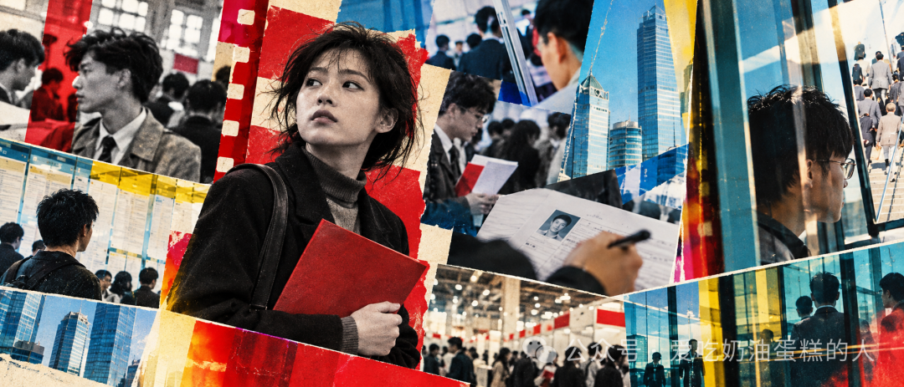
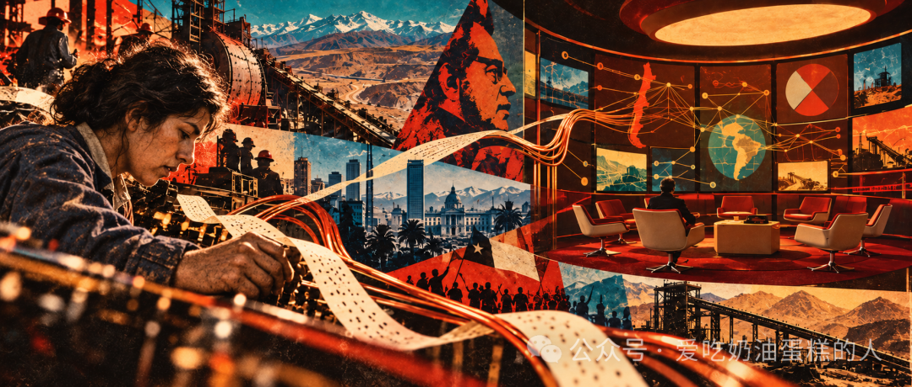